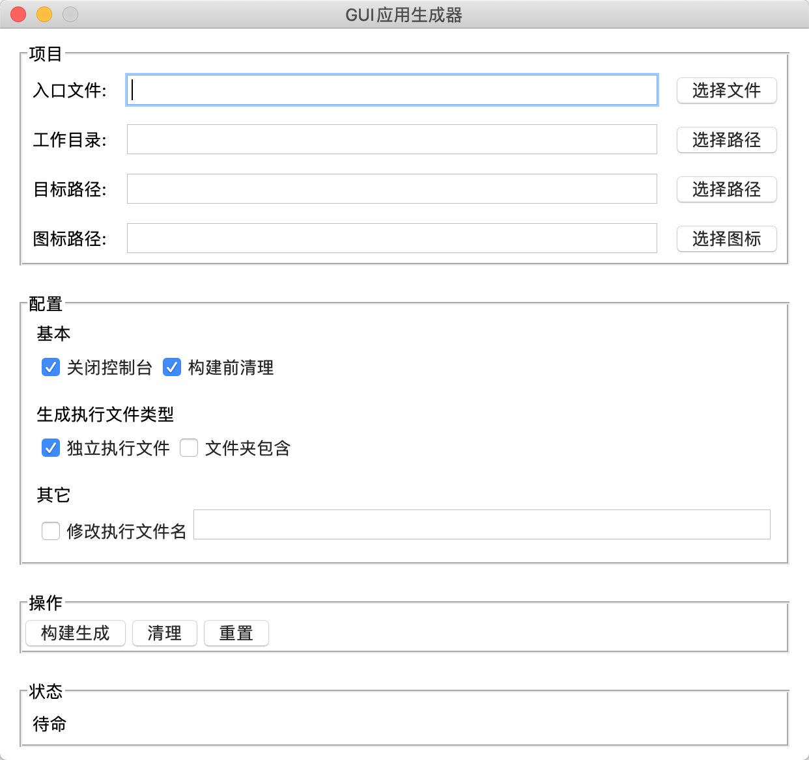

一个 PyInstaller 的 GUI 实现，使用 Python 语言开发，GUI 基于 Tkinter，利用 PyInstaller 将 Python 脚本语言打包发布成单个的可执行程序，
状态：开发中
主要功能：
主要功能：
源码地址：https://github.com/pythub-project/pyinstaller-desktop
下载地址：Mac 端
Mac 端应用不能运行的，需要自行添加签名。执行如下命令
sudo codesign --force --deep --sign - 应用程序路径
Mac端：
